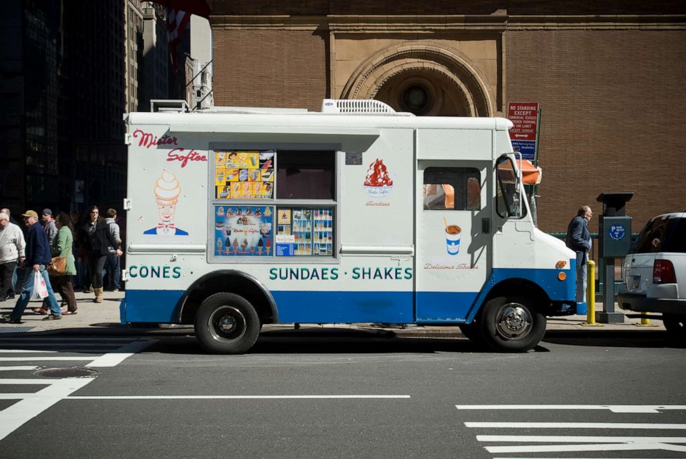

Paul Raimonda park, known to many as "48th", is located in Astoria, Queens. It is home to people of all races and religions, and is more active during the warmer months of the year. It has been a major part of my life in America and played a huge role in my upbringing. It has helped me come to love basketball and many of my favorite memories were made at 48th. It is often visited by a Mr.Frosty truck driver named Mr.Gus, who loves to give out ice cream and slushies to me and my friends in the warm summer days we spend at the park. Without him, 48th street park would be incomplete, and I can't remember a time when he wasn't driving around playing the ice cream truck song on the loudpeakers.
